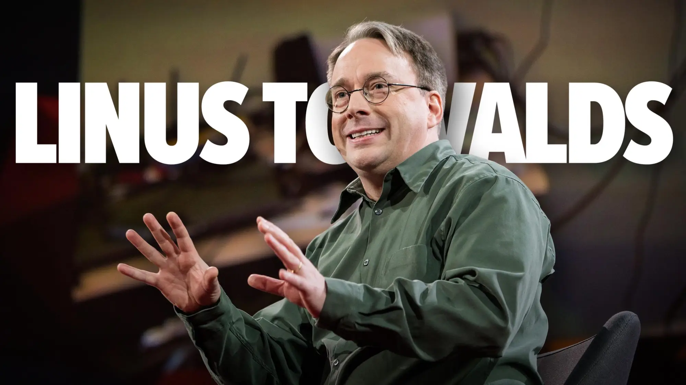

Linus Benedict Torvalds nació en Helsinki, capital de Finlandia, en una familia dedicada a la comunicación y la cultura. Su inicio vital estuvo marcado por un entorno cercano a las letras y a la investigación, lo que coloreó su trayectoria tecnológica con un tono de curiosidad infinita y de deseo por comprender cómo funcionan las cosas. Desde muy joven mostró una inclinación natural por las máquinas y los lenguajes de programación, rasgos que se irían consolidando con el paso del tiempo y que acabarían por influir de manera decisiva en la historia del software libre. Este es el relato de un ingeniero que convirtió una idea personal en una revolución mundial del código abierto, sin perder de vista sus raíces ni su búsqueda constante de mejora.